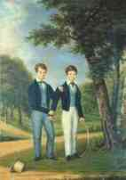
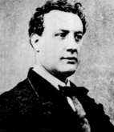
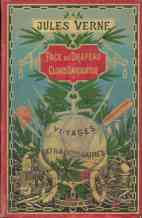
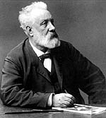

Breu biografia
Una família acomodada.
Jules Verne va néixer a Nantes, Bretanya (França), el 8 de febrer de 1828. El seu pare, Pierre, era un advocat amb una bona posició. La seva mare, Sophie Allotte de la Fuye, provenia d'una família d'armadors enriquits pel pujant comerç colonial de Nantes, principal port del Loire. Un comerç que evoca al seu torn el sucre de les Antilles, per bé que també i sobretot el tràfic de negres.
Un apassionat per la mar.
De les tres
passions de tota la seva vida -el mar, la literatura i la llibertat- va ser
la marinera la que va aparèixer més d'hora en ell. Es diu que
als onze anys va escapar-se de casa per embarcar-se com a grumet en un vaixell
que es disposava a salpar cap a Orient. El seu pare, després de ser avisat
per uns coneguts, va aconseguir d'atrapar-lo quasi quan el vaixell estava a
punt de fer-se a alta mar. El jove Verne va ser sotmès a un sever càstig.
El seu pare li va fer jurar que "no tornaria a viatjar mai més sinó
en somnis".
Uns anys més tard, en El raig verd, una de les seves obres, escrivia:"No
puc veure una nau, un vaixell de guerra, una barca de càrrega o una simple
xalupa de pesca sense que tot el meu ésser s'embarqui a bord. Crec que
jo era fet per ser mariner i lamento cada dia que aquesta carrera no hagi estat
la meva".
Al seu germà, Paul, sí que se li va permetre la vocació
marinera que a ell se li va negat. La vocació literària va se
li va despertar també molt aviat.
Els anys de formació i els primers treballs.
El 1848 es va instal·lar a París per seguir els estudis de Dret, malgrat que dedica molt més temps a llegir i a escriure teatre que a estudiar. En un dels salons literaris de París coneix i fa amistat amb Alexandre Dumas, del qual es va fer amic, aconseguint que li estrenés una petita obra en un acte al teatre que dirigia. Dumas va ser el primer a qui va exposar la seva idea de la "novel·la de la ciència", un projecte que Dumas va qualificar d'"immens". El 1851 va començar a publicar a Le Musée des Familles, una revista de divulgació científica amb ànims educatius, els seus primers treballs: Un viatge amb globus i Els primers vaixells de la marinamexicana.
Una vegada acabats els seus estudis de Dret, el seu pare el demana a Nantes. Jules li anuncia que no desitja tornar-hi i que el que vol es quedar-se a París i de dedicar-se a la literatura. El pare va consentirhi, encara que una mica si us plau per força. Durant aquells anys va escriure diverses obretes de teatre, algunes de les quals van aconseguir d'estrenar-se gràcies al seu treball com a secretari del Teatre Líric. Podem dir que les seves primeres obres narratives van ser Martín Paz (1852) i Mestre Zacaries (1854). El 1857 es va casar a Amiens amb Honorine de Vyane, una vídua amb dues filles. Per tirar endavant amb la seva "família nombrosa", que aviat augmentarà amb el naixement del seu fill Michel, va haver de treballar com agent de3 borsa a París.
Una trobada clau.
La veritable
carrera literària de Verne va començar el 1863 amb l'èxit
immediat de Cinc setmanes en globus, publicada per Jules Hetzel. El seu
encontre amb Hetzel va ser decisiu, ja que aquest va convertir-se no solament
en el seu editor, sinó també en el seu mentor literari i en el
seu "pare espiritual". Per a Hetzel, el descobriment de Verne va ser
el d'una mina d'or i a més a més molt oportú, ja que tenia
la intenció de llançar una publicació -Le Magasin d'Éducation
et Récreation- i no havia pogut fer-ho a causa que no tenia redactors
idonis. Verne ho era.
El contracte que Hetzel i Verne van signar -tres volums l'any- va fer que el
nostre home pogués dedicar-se a la literatura de forma professional.
Tanmateix, Verne es va veure sotmès a,b aquesta relació a un control
editorial que va comportar que la seva literatura se circumscrigués a
la que es dirigia a un públic infantil i juvenil.
Dotat d'una voluntat fèrria i d'una capacitat de treball prodigiosa,
Verne no solament va complir fins a l'últim dia de la seva vida les obligacions
a les quals el sotmetia aquell contracte, sinó que fins i tot sempre
va anar per davant amb diverses obres que tenia com a reserva.
Les obres principals.
Entre 1863 i 1876 Verne va escriure les que han esdevingut les seves grans obres mestres: Viatge al centre de la Terra, Les aventures del capità Hatteras, Els fills del capità Grant, Vint mil llegües de viatge submarí, De la Terra a la Lluna, La volta al món en 80 dies, L'illa misteriosa, etc. Cap a l'any 1879, amb Els cinc-cents milions de la Begun s'inicia una clara inflexió en l'obra de Verne que deixa de caracteritzar-se per una fe a ultrança en la ciència per començar a veure aquesta part del coneixement amb un esperit més crític.
/
El viatger Verne.
Verne, en
contra del que algunes vegades s'ha dit, va ser un apassionat dels viatges.
Sempre que va poder va emprendre vitges per conèixer directa,ment la
geografia i els costums dels països i indrets que sovint ja coneixia des
dels textos escrits.Després d'un breu viatge als Estats Units amb el
seu germà, a bord del transatlàntic més gran de l'època,
el Great Eastern, un viatge a penes novel·lat en Una ciutat flotant,
es va instal·lar definitivament, el 1872, a Amiens.
Durant els estius efectuava llargs creuers a bord dels seus tres vaixells successius
(la saga dels Saint Michel), l'últim dels quals era un veritable iot
que va poder comprar gràcies als ingressos que li reportaven les exitoses
representacions teatrals de La volta al món en 80 dies i de Miquel
Strogoff. Afortunadament, malgrat aquesta activitat viatgera del nostre
home, les descripcions dels llocs imaginats per ell són molt superiors
a les dels observats directament. L'any 1886 va ser doblement dramàtic
per a Verne. Un .seu nebot, afectat per un trastorn mental, li va engegar un
tret. A conseqüència d'aquesta circumstància Verne va quedar
coix per a la resta de la seva vida. Als pocs dies moria Hetzel.
El 1889 sorprèn tothom presentant la seva candidatura a una conselleria
d'Amiens en la llista radical. Durant molts anys, Verne va participar en la
vida política local, encarregant-se, sobretot, d'afers relacionats amb
temes culturals.
Els últims anys.
Condemnar a la vida sedentària per la seva claudicació física -a la coixesa s'afegeixen les xacres i les seqüeles de la diabetis que el durà a la tomba-, es refugia més que mai en el treball. El seu caràcter s'enfosqueix i esdevé taciturn, aclaparat pels disgustos familiars i pel malentès en el qual basa la seva celebritat universal. Aquest malentès és el que li tanca les portes de l'Acadèmia Francesa, que vol obrir-li Dumas fill, el que desvia la crítica literària de la seva obra, malgrat l'admiració manifestada envers ella per un Tolstoi, un Turgenev i molts d'altres grans escriptors.
El desengany de la ciència.
Aquest enfosquiment
del seu caràcter es reflecteix en el pessimisme de les obres dels últims
anys de la seva vida, en les quals abunden les visions terrorífiques
de l'ús que l'home pot fer de la ciència i de la tècnica,
com a instruments terribles de destrucció. Les premonicions esgarrifoses
del terror i del totalitarisme de l'univers nazi i de la bomba atòmica
són molt més notables que les més famoses dels vehicles
(submarí, helicòpter, nau espacial, etc.) i estableixen amb més
fonament la modernitat de la seva obra.
Després de la seva mort, esdevinguda el 24 de març de 1905, Verne
va continuar gaudint del favor universal del públic, com a autor insubstituïble
per a infants i adolecents. D'aquest encasellament l'ha tret durant els darrers
anys la crítica literària, en un procés de revaloració
determinat pel descobriment dels valors poètics i simbbòlics de
la seva obra. Gràcies a això, Verne està recuperant ara
els lectors adults que ja va tenir a la seva època. Però la direcció
en la qual es mou la majoria dels estudis crítics que se li han dedicat
en els últims anys corre el risc de mutilar la significació de
la seva obra, pel fet d'ignorar la seva important dimensió històrica,
tan important que esdevé imprescindible per al millor coneixement del
segle XX.
La influència de la seva obra.
Però
la valoració de l'obra verniana desborda de bon tros els límits
estrictes de la literatura. No es pot ignorar la seva influència enorme
sobre la història de la cultura, a partir de les vocacions suscitades
per un Nemo, un Ardan, un Robur. Són innombrables els mariners, exploradors,
científics, enginyers que van sorgir de la lectura apassionada dels Viatges
extraordinaris. Es podria aportar aquí un seguici llarguíssim
de testimonis, des de Georges Claude fins al comandant Cousteau, des de Simon
Lake fins a De la Cierva, des de Mendelejev fins a Obrutxev. N'hi ha prou de
citar Gagarin, el primer home que va seguir a l'espai còsmic les traces
d'Ardan i de Servadac: "Va ser Verne qui em va decidir a l'astronàutica".
L'èxit de Verne va ser tan immens a l'antiga Unió Soviètica,
que allí se li va tributar l'honor més gran que pogués
somiar l'autor de De la Terra a la Lluna i Al voltant de la Lluna: donar el
seu nom a una de les muntanyes de la cara oculta de la Lluna, descoberta per
primera vegada per un dels sputniks russos. Mont Jules Verne. Viatge al món
desconegut de la Lluna.